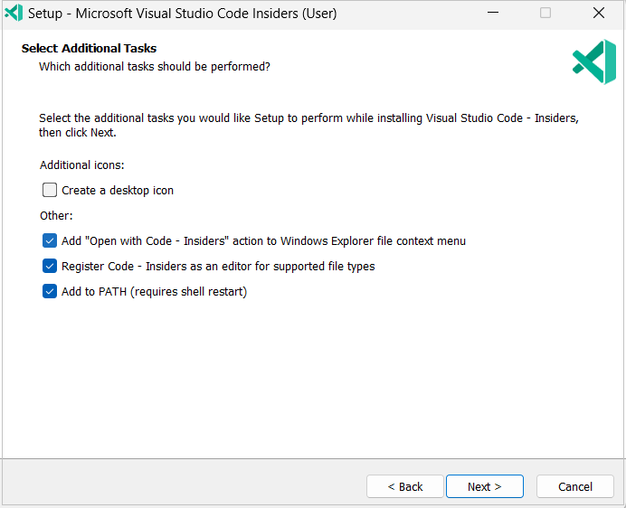

October 2022 (version 1.73)
Update 1.73.1: The update addresses these issues.
Downloads: Windows: User System Arm64 | Mac: Universal Intel silicon | Linux: deb rpm tarball Arm snap
Welcome to the October 2022 release of Visual Studio Code. There are many updates in this version that we hope you'll like, some of the key highlights include:
- Search include/exclude folders - Quickly set folders to include/exclude in the tree view.
- Command Center mode shortcuts - Displays commonly used modes before recent files list.
- Merge editor improvements - Access Combination option to auto merge conflicts.
- Markdown automatic link updates - File and image links updated on rename/move.
- More audio cues - Task completed or failed, Terminal Quick Fix available.
- vscode.dev protected branch workflow - Create new branch when committing to protected branch.
- New Python extensions - New standalone extensions for isort, Pylint, and Flake8.
- Dev Container Templates - Create new Dev Containers based on existing templates.
If you'd like to read these release notes online, go to Updates on code.visualstudio.com.
Insiders: Want to try new features as soon as possible? You can download the nightly Insiders build and try the latest updates as soon as they are available.
Accessibility
New audio cues
There are new audio cues to help with Tasks and the Terminal.
- Task completed - sounds that a task is completed (controlled by the
audioCues.taskCompletedsetting). - Task failed - sounds when a task fails (
audioCues.taskFailed). - Terminal Quick Fix - if a Quick Fix is available on the current line (
audioCues.terminalQuickFix).
Word wrapping in screen reader mode
Word wrapping had been disabled when running VS Code in screen reader mode to prevent a degraded screen reader experience. This has been fixed and can be enabled via editor.wordWrap.
Accessibility setting tag
An accessibility tag is now available to improve discoverability of accessibility related settings.
The Preferences: Open Accessibility Settings command opens the Settings editor with the @tag:accessibility filter.
Workbench
Include and exclude folders from Search
When right-clicking a folder in the Search view's tree view of results, there are now two new options in the context menu.
-
Selecting Restrict Search to Folder adds the selected folder path(s) to the files to include textbox. Adding a path to this textbox will limit search results to ones that fit the listed paths or patterns.
Theme: GitHub Dark Dimmed (preview on vscode.dev)
-
Selecting Exclude Folder from Search adds the selected folder path(s) to the files to exclude textbox. Adding a path here will exclude any search results that fit the listed paths or patterns.
Theme: GitHub Dark Dimmed (preview on vscode.dev)
Command Center mode shortcuts
A new top section was added to the Command Center to make it easy to discover how to navigate to files, run commands, and more.
This short list of modes also provides keybinding hints so that you can jump directly to your most-used modes (for example Go to File) without going through the Command Center.
The Command Center UI is not shown in the title bar by default but you can enable it via the Window: Command Center (window.commandCenter) setting or by right-clicking on the title bar and checking Command Center.
Settings editor Workspace Trust and policy indicators
Settings that are not applied due to a Restricted Mode workspace or due to being managed under an organization policy now use indicators to display their status. The user can read and write workspace settings even in a Restricted Mode workspace (which was always possible using the settings.json file), but the workspace setting value won't be considered when calculating the final value of the setting to use in a restricted workspace.
There have also been a few adjustments to the default light theme, with clearer codicon rendering in the indicators area and tighter focus borders.
Outline default collapse state
There is a new setting outline.collapseItems that controls the default collapse state of items in the Outline view. The default value is false, which means that Outline items are expanded by default. Set it to true to have Outline items collapsed by default. This setting can be set per language and also works for notebooks.
Rearrange the View menu
In the View menu of the VS Code menubar, the final group was a growing list of editor actions. As a means to balance growth of the menu and functionality, we have moved the primarily appearance-related items under the Appearance submenu. The Word Wrap and Sticky Scroll options have been left in their original positions at the bottom of the menu.
Theme: GitHub Light Default (preview on vscode.dev)
Rounded corners on input UI
Text inputs, text areas, and dropdowns all now display rounded corners to match the same styling applied to buttons in a previous release.
Quick Pick list style updates
The list styling used in the Quick Pick UI has been lightly refreshed with rounded corners and increased left/right margin.
Updated codicons for list views
Flat list and tree list views now use more legible codicons to represent the list type.
Secondary Side Bar foreground color
The Secondary Side Bar mimics the theming of the Primary Side Bar in general, but not all theme keys were being picked up properly. The Secondary Side Bar now properly uses the "sideBar.foreground" theme key.
Below both the Primary Side Bar on the right with the Explorer and Secondary Side Bar on the left with the Outline view are using the same pink foreground color.

Theme: GitHub Light Default (preview on vscode.dev)
No more 'Too many folding ranges' notifications
For performance reasons, we limit the number of folding ranges shown in the editor to 5000. The limit can be configured by the setting editor.foldingMaximumRegions. When the limit is exceeded, VS Code used to show a notification. Now the language status hover in the Status bar shows that information.
Default folding provider
Normally, when there are multiple folding providers active for a language, VS Core tries to merge the results. If there are conflicting ranges, some ranges are discarded. In addition, not all folding providers can be combined with others providers.
The new editor.defaultFoldingProvider setting allows you to select the folding provider to use. The name of the provider is the extension ID ({publisher}.{extension}) of the extension that contributes it.
The following example sets the folding provider from the (hypothetical) extension aeschli.better-folding to be the default for JavaScript.
"[javascript]": {
"editor.defaultFoldingRangeProvider": "aeschli.better-folding"
}
Setting log level per output channel
You can now set log level per log output channel using the command Developer: Set Log Level.... This is useful when you want to see more logs only from a specific log output channel. The command will first show the list of output channels and after selecting one, you'll be prompted to set the log level.
You can also set log level per extension from the command line. This is useful when you want to see more logs from a specific extension. For example, the following script allows you to start VS Code with default log level set to debug for the log output channels from the Git extension.
code --log vscode.git:debug
New list.collapseAllToFocus tree view command
A new command list.collapseAllToFocus lets you recursively collapse the currently focused tree item. This is useful when you want to collapse all children of a tree item that isn't the root. There isn't a default keybinding for the command but you can add your own keyboard shortcut via the Keyboard Shortcut editor (⌘K ⌘S (Windows, Linux Ctrl+K Ctrl+S)).
Merge Editor
This milestone we continued polishing the merge editor and this update contains several bug fixes and some new features.
Accepting both sides appends conflicts
With this release, both Accept Incoming and Accept Current can always be selected. When both options are taken, the merge editor appends the corresponding changed lines.
In the short video below, RelativePattern is imported twice as both lines are accepted:
When the conflict can be resolved without conflicts on a character level, the option Accept Combination is shown, and can be used to automatically resolve the conflict.
In the video below, both symbols are imported into the same import statement:
Diff decorations against base
When the base view is opened, a diff is shown between the currently focused side and base. This diff view can be used to better understand the changes in Incoming and Current.
Diff algorithm improvements
The default diff algorithm for the merge editor has been changed. The new diff algorithm is optimized for merge scenarios. In common cases, the number of hunks are minimized and insertion positions are optimized. In case the new algorithm causes problems, the setting "mergeEditor.diffAlgorithm": "smart" can be used to switch back to the previous algorithm (default is now experimental).
The following screenshots demonstrate the improvements for insertions. Note that both diffs are correct but the new behavior more clearly highlights the inserted text:
Old behavior:
New behavior:
The new diff algorithm is currently only enabled by default in the merge editor. You can set "diffEditor.diffAlgorithm": "experimental" if you'd like the regular diff editor to also use the new diff algorithm.
Navigate through conflicts
You can now click the conflict counter to jump to the next unhandled conflict:
Languages
Markdown automatic link updates on file rename / move
Tired of accidentally breaking links or images in your Markdown when you move or rename files? Try the new markdown.updateLinksOnFileMove.enabled setting!
With this new setting enabled, VS Code will automatically update links and images in Markdown when files are moved or renamed in the VS Code Explorer:

You can control the types of files affected using markdown.updateLinksOnFileMove.include. By default, it is enabled for all Markdown files and common image file formats.
Markdown insert link commands
The new Markdown: Insert Link to File in Workspace and Markdown: Insert Image from Workspace commands let you quickly insert links and images to your Markdown using a file picker:
Remember that these commands are just one option for adding links and images to your Markdown files. You can also use Markdown path completions for this or even drag and drop files from VS Code's Explorer to insert links or images.
Markdown unused and duplicate link definition diagnostics
Our built-in Markdown validation can now alert you to unused or duplicated link definitions. You can enable this feature with markdown.validate.enabled:
If you want finer grained control of these errors, you can use these markdown.validate settings to either disable these errors (ignore) or change their severity (warning, error):
markdown.validate.duplicateLinkDefinitions.enabledmarkdown.validate.unusedLinkDefinitions.enabled
There is also a Quick Fix to remove duplicated or unused link definitions.
Markdown link occurrence highlighting
Link occurrence highlighting in Markdown shows you all the places in the current document where the link under the cursor is being used:
Notice how with the cursor on the the first link in the document, all links to First Header as well as the header itself are highlighted in the document and in the gutter to the right of the document.
This feature is off by default. To enable it, turn on the markdown.occurrencesHighlight.enabled setting.
New Razor syntax highlighting grammar
VS Code has a new, better-maintained, Razor grammar for syntax highlighting of Razor files. The new grammar is actively maintained and fixes issues that existed in the old grammar.
VS Code for the Web
Improved branch creation and protection workflows
When you are in a GitHub or Azure Repos repository on VS Code for the Web, committing to a protected branch now notifies you that the current branch is protected, and prompts you to create a new branch.
This flow will also honor the following settings:
git.branchPrefixallows you to prepopulate the branch name quick input with a configured prefix."git.branchProtectionPrompt": "alwaysCommitToNewBranch"allows you to skip the prompt when you attempt to commit to a protected branch and go straight to the quick input for creating a new branch.
In addition, when you create a new branch, you can bypass the prompt about whether to switch to the newly created branch by configuring "remoteHub.switchToCreatedBranch": "always".
All of the above also applies when using the GitHub Repositories or Azure Repos extensions on VS Code for the desktop.
Localization improvements in the web
A few months ago we started working on localization for VS Code for the Web. Up until now, VS Code core and extensions with statically declared strings in their extension manifests were able to be localized. This iteration, we've completed the final piece of the puzzle: strings in extension code. This was checked off due to the finalization of the localization API that we proposed last month.
Be on the lookout for more of VS Code becoming localized as we continue to adopt this new API in all of our extensions. If you're an extension author, you can learn more about the new API in the vscode-l10n repository.
Contributions to extensions
Python
Migration to isort extension
In our May 2022 release, we announced a new isort extension that works alongside the Python extension to sort imports. For example, when you open a file and the imports do not follow isort standards, it will display an error diagnostic and provide a Code Action to fix the import order. In this release, we are migrating to use the standalone isort extension instead of the isort support built into the Python extension by automatically installing it alongside the Python extension.
Auto imports turned off by default with Pylance
Since auto imports were first implemented in Pylance, we've been getting a lot of feedback about how confusing and, sometimes, annoying it can be to have an import automatically added to a file when, for example, suggestions are accepted by accident. Starting this release, packages will no longer be imported automatically by default when using Pylance. If you'd like to re-enable auto imports for your Python projects, you can do so by setting "python.analysis.autoImportCompletions": true.
Pylint and Flake8 extensions recommendation
In our previous releases, we announced new Pylint and Flake8 extensions that work in tandem with the Python extension through the Language Server Protocol (LSP) to provide linting. In this release, we display a notification if you are still using the Pylint and Flake8 features built into the Python extension, prompting you to install these new extensions.
Remote Development
The Remote Development extensions, allow you to use a container, remote machine, or the Windows Subsystem for Linux (WSL) as a full-featured development environment. Highlights of this release include:
- Dev Container Templates - Quickly create a Dev Container based on an existing template.
- Dev Container Features - Add capabilities to a Dev Container by including prepackaged features (or create your own!)
- Create new Dev Container without a starting folder.
You can learn about new extension features and bug fixes in the Remote Development release notes.
GitHub Pull Requests and Issues
Work continues on the GitHub Pull Requests and Issues extension, which allows you to work on, create, and manage pull requests and issues. Check out the changelog for the 0.54.0 release of the extension to see the other highlights.
Preview features
TypeScript 4.9
This update includes support for the upcoming TypeScript 4.9 release. See the TypeScript 4.9 iteration plan for more details on what the TypeScript team is currently working on. Some editor tooling highlights:
- A new Sort Imports command that sorts imports without removing unused ones.
- Running Go to Definition on a return statement now jumps to the function declaration.
- Switch to a new default file watcher, which should perform better.
To start using the TypeScript 4.9 nightly builds, install the TypeScript Nightly extension.
Settings Profiles
We have been working the last couple of months to support Settings Profiles in VS Code, which is one of the most popular asks from the community. This feature is available for preview via the workbench.experimental.settingsProfiles.enabled setting. Try it out and give us your feedback by creating issues in the vscode repository or commenting in issue #116740.
Showing Synced Profiles Data
You can now see the data that is synced for each profile in the Sync Activity (Remote) view. This is useful to understand what data is synced for each profile.
Note: This feature is currently available only in the Insiders release of VS Code.
Extension authoring
Provide metadata for workspace edits
The API to apply a workspace edit now lets extensions provide metadata, for example for marking the edit as being a refactoring. This extra metadata will be honored by the editor and Auto Save after refactoring (setting: files.refactoring.autoSave).
Restrict which commands can be run by MarkdownString and in webviews
Command links in MarkdownString are a useful way to create custom interactions in VS Code's hovers message or IntelliSense details. Webviews can also use command links to trigger VS Code commands directly from the webview. However, command links can also be dangerous as they can be used to execute any command, including many commands that were not designed with security in mind. For this reason, command links are disabled by default and must explicitly be enabled by extensions.
While this all-or-nothing approach works, we've also found it places too much of the security burden on extension authors. Extensions that need to use command links must validate that only safe commands are included in the content they render. This is both easy to forget and easy to get wrong.
To improve this, we're introducing new APIs for command link enablement that allow extensions to enable just a trusted subset of commands.
For MarkdownString, the isTrusted property now takes an allowlist of commands that can be executed (all other commands will be blocked):
const md = new vscode.MarkdownString(
`A command link: [Open setting](command:workbench.action.openSettings)`
);
// Set trusted commands instead of enabling all commands
md.isTrusted = { enabledCommands: ['workbench.action.openSettings'] };
For webviews, the WebviewOptions.enableCommandUris property can now be a list of enabled commands instead of a simple true/false:
const options: vscode.WebviewOptions = {
enableCommandUris: ['workbench.action.openSettings']
};
We highly encourage that all extension that use command links adopt this new, more restrictive API to improve security.
Consistent origin for webviews and webview views
To improve the loading time of webviews, we now try to maintain a consistent origin for all instances of a given type of webview. This has two main benefits:
-
Webviews can better take advantage of caching. This means local resources should load faster.
-
Webviews can use local storage and other web APIs that are partitioned per origin.
Keep in mind that all instances of a webview will now run on the same origin so if they are using an API such as local storage, be sure to partition any data/state that is document specific per resource. For example,
localStorage.setItem('scrollPosition', 100)will setscrollPositionto 100 across all webview instances. If you want to set the scroll position for individual resources, you also need to include the resource ID in the key:localStorage.setItem(myDocUri, JSON.stringify({scrollPosition: 100 })).You should also never use localStorage or similar APIs to store critical data, such a document contents. While VS Code makes a best effort to maintain a consistent origin for webviews, we cannot guarantee the origin will not change.
In many cases, you should use the webview state APIs as these APIs handle both of the above problems for you.
The origin is randomly generated for each extension and type of webview. The same origin is used across all instances of the webview.
Currently both normal webviews and webview views try to maintain a consistent origin. We plan on adopting this for custom editors and notebook webviews next iteration.
Debug Adapter Protocol
New 'startDebugging' reverse request
Today VS Code supports multiple concurrent debug sessions but the Debug Adapter Protocol (DAP) covers only a single session. That means that creating new debug sessions programmatically is not part of DAP and can only be done outside of DAP or the debug adapter, typically in the debug extension that contains the debug adapter. As a consequence, multi-session functionality such as automatically debugging child-processes is not easily available for non-VS Code DAP clients, because they typically only use the debug adapter and not the VS Code specific debug extension.
To improve this situation, we have added a new reverse request startDebugging to DAP that allows extensions to create a new debug session (of the same type as the caller) from within the debug adapter. A client capability supportsStartDebuggingRequest indicates to a debug adapter that the client supports startDebugging.
In the October release, VS Code has implemented startDebugging.
Proposed APIs
Every milestone comes with new proposed APIs and extension authors can try them out. As always, we want your feedback. Here are the steps to try out a proposed API:
- Find a proposal that you want to try and add its name to
package.json#enabledApiProposals. - Use the latest vscode-dts and run
vscode-dts dev. It will download the correspondingd.tsfiles into your workspace. - You can now program against the proposal.
You cannot publish an extension that uses a proposed API. There may be breaking changes in the next release and we never want to break existing extensions.
Static notebook preloads
The new notebookPreload proposed contribution point lets extensions contribute scripts that are loaded into notebooks of a specific type.
{
"contributes": {
"notebookPreload": [
{
"type": "jupyter-notebook", // Type of notebook for the preload script
"entrypoint": "./path/to/preload.js"
}
]
}
}
This contribution point is controlled by the contribNotebookStaticPreloads API proposal. Extensions can use preloads to load or define globals in the notebook JavaScript environment.
The preload script must be a JavaScript module that exports an activate function. All preloads are evaluated before any renderer scripts.
Notebook renderers can access all output items
Custom notebook renderers can now access all MIME data of the output item it is rendering. If the renderer determines that it cannot render the main output item properly, this API proposal lets it fall back to render one of the other MIME types instead.
The entrypoint of this proposal is a new OutputItem._allOutputItems property. The property is an ordered list of all MIME types that the current output item contains. Each item in the list has the shape { mime, getItem() }. mime is the MIME type such as text/html or image/png, while the getItem() function returns a promise to an OutputItem for that MIME type.
Here's how a renderer can use this new API:
async function renderOutputItem(outputInfo, element, signal) {
const didRender = tryRenderMainItem(outputInfo, element);
if (!didRender) {
// Fallback to render `text/html`
const htmlItem = await outputInfo._allOutputItems
.find(item => item.mime === 'text/html')
?.getItem();
if (htmlItem) {
// Here we can either render the 'text/html' item ourselves
// or delegate to another renderer.
const renderer = await ctx.getRenderer('vscode.builtin-renderer');
if (renderer) {
return renderer.renderOutputItem(htmlItem, element, signal);
}
}
}
}
Give this proposal a try and let us know what you think!
Extension telemetry API
To further drive telemetry best practices and enhance the telemetry features extensions have offered to them, this iteration introduces the proposed telemetryLogger API. This API allows extension to supply a TelemetryAppender, which acts as the core sending logic (implemented utilizing Application Insights or another data recording service). This TelemetryAppender is then used to instantiate a TelemetryLogger, which is the class that you should log telemetry through.
The TelemetryLogger provides a shared output channel to see sent telemetry events, proper telemetry setting checks, and personally identifiable information cleaning. Additionally, any errors thrown by utilizing the VS Code API will be logged to your appender for better error diagnostics.
There is a simple example in the telemetry sample and you can provide feedback in issue #160090.
Log output channel
In the last milestone, we introduced the LogOutputChannel API proposal for creating an output channel that is only used for logging. This iteration, we added logLevel property and onDidChangeLogLevel event to it. The logLevel property represents the current log level of the output channel and the onDidChangeLogLevel event is fired when the log level changes for the output channel.
/**
* A channel for containing log output.
*/
export interface LogOutputChannel extends OutputChannel {
/**
* The current log level of the channel.
* Defaults to application {@link env.logLevel application log level}.
*/
readonly logLevel: LogLevel;
/**
* An {@link Event} which fires when the log level of the channel changes.
*/
readonly onDidChangeLogLevel: Event<LogLevel>;
...
...
}
We also added logLevel property and onDidChangeLogLevel event to env namespace to represent the current log level of the application and the event is fired when the log level changes for the application.
export namespace env {
/**
* The current log level of the application.
*/
export const logLevel: LogLevel;
/**
* An {@link Event} which fires when the log level of the application changes.
*/
export const onDidChangeLogLevel: Event<LogLevel>;
}
Engineering
Optimizing for input latency
As VS Code has grown in size, so has the amount of activity when a keystroke is pressed. This iteration we stepped back and did a thorough investigation into what exactly happens when you type in the editor and what can we defer until after the keystroke is rendered on screen. The main outcomes of this exploration were:
- Several changes were made to defer as much work as possible until after a keystroke in the editor has been rendered on screen. A rough estimate of the impact of this is a ~15% reduction in input latency when IntelliSense is not showing, and an even higher reduction when IntelliSense is being refiltered.
- We now have more refined techniques for manually measuring input latency and optimizing at this sub-millisecond* level.
- There is a work-in-progress change that will help us track and report samples of input latency. This will give us some concrete numbers to maintain and improve against.
This is just the beginning of this effort and we have more changes that should land next release.
* These numbers are very dependent upon the hardware that is used to test. A 0.5-ms improvement on powerful hardware may end up being 2ms on more average hardware.
Automatic renderer profiling
The renderer-process of VS Code is responsible for its UI; it ensures a blinking cursor, the ability to type, and to save. Any performance issue in the renderer-process will be visible to the user and result in a bad experience. To help us identify and fix performance issues in the renderer-process, we have added a new setting application.experimental.rendererProfiling that can be used to automatically profile the renderer-process. The setting can be set to on to enable profiling, and off to disable profiling. When enabled, the renderer-process will be profiled for a few seconds whenever it "appears as pressured", and the profile is then analyzed, anonymized, and sent off for inspection. You can use the window log to follow along with the profiling process.
Note that this feature is currently off by default as we still learn and tune things. Please try it out and let us know what you think.
Windows 11 Context menu
In this release, VS Code setup is adding an Open with Code - Insiders context menu entry to Windows 11 context menu for Insiders by default. For users, who had previously opted into the context menu when installing the Insiders, the entry that would show up in the old style menu Shift + F10 will now be replaced with the newer entry when updating to the latest Insiders. For others, you would need to reinstall Insiders and opt-in to enable this menu entry in the setup wizard. Due to issues we encountered during development of the menu entry, we plan to limit this feature to Insiders for a couple of milestones to gain confidence before we push it out to the Stable release for all Windows 11 users.

The Open with Code Insiders action will then be available in Windows File Explorer folder and file context menus.
Notable fixes
- 151019 Debug hover is hiding when hovered
- 153852 Proposal: Remove ES5 Class Compatibility to speed up Extension APIs
- 156104 Don't auto-forward port on url link click, if it's already statically forwarded
- 158921 Settings Modified Elsewhere indicator hover content overflows
Thank you
Last but certainly not least, a big Thank You to the contributors of VS Code.
Issue tracking
Contributions to our issue tracking:
- John Murray (@gjsjohnmurray)
- Simon Chan (@yume-chan)
- Andrii Dieiev (@IllusionMH)
- ArturoDent (@ArturoDent)
- RedCMD (@RedCMD)
Contributions to vscode:
- @andrewbranch (Andrew Branch): [typescript-language-features] Add
removeUnusedImportscommand PR #161654 - @babakks (Babak K. Shandiz): 🐛 Fix un-awaited call to show CWD picker PR #163220
- @Balastrong (Leonardo Montini): Auto detect indentation when pasting on an empty file PR #156282
- @Brikaa (Omar Brikaa): Add keyboard shortcuts for scrolling horizontally PR #162992
- @CyrilOtheninGirard (Cyril OG): Bash shell integration -- exit code is not restored when PROMPT_COMMAND is an array PR #158091
- @daiyam (Baptiste Augrain): feat: select the folding provider to use PR #157434
- @dsanders11 (David Sanders)
- Fix references to non-existent
runTestsAPI PR #162543 - Scroll webview to top if unmatched fragment is #top PR #164070
- Fix references to non-existent
- @dtivel (Damon Tivel): Add extension signature verification service PR #162285
- @gjsjohnmurray (John Murray)
- Add
outline.collapseItemsand fix outlines collapsing unexpectedly (#_53262) PR #158650 - Reference correct setting in property description (#_162663) PR #162665
- Add
- @hughlilly (Hugh Lilly): Fix comma splices in descriptions in
src/vs/workbench/contrib/terminal/common/terminalConfiguration.tsPR #164401 - @jacekkopecky (Jacek Kopecký)
- Check for unsaved editors before asking to save PR #159318
- Address misplaced cursor PR #159325
- @jakebailey (Jake Bailey)
- Don't depend on typescript protocol.d.ts PR #163365
- Remove forgotten reference to typescript/lib/protocol PR #163585
- Ensure 'undefined' does not make it into tsserver.web.js PR #164064
- @jannisspeer: Remove Snakefile from being classified as Python PR #162749
- @jeanp413 (Jean Pierre)
- Fixes detaching a terminal editor doesn't fire vscode.window.onDidCloseTerminal event PR #154546
- Fixes simple browser webview is not reused if restored PR #163389
- Fix disable privileged ports for OSX PR #163890
- Fixes newline in tree item label makes label unreadable PR #163995
- Fixes extension Disable button does not have border radius on the right side PR #164109
- @joshaber (Josh Abernathy): Add open preview enabled context, part 2 PR #163682
- @jsjoeio (Joe Previte): fix: preserve process.execArgv PR #161853
- @laurentlb (Laurent Le Brun): Update column names in 'Feature Contributions' PR #162844
- @marrej (Marcus Revaj): # Provide correct response to applyEdit() PR #162430
- @mrienstra (Michael Rienstra): Enforce yarn version PR #162610
- @mustard-mh (Huiwen): Fix #161565 PR #161567
- @nikita-r (Nikita R.): Modify "WordPart" family of commands to respect kebab-case (resolves #158667) PR #158672
- @pingren (Ping): Enable user-select for monaco editor on macOS PR #156755
- @qingpeng9802 (Qingpeng Li): Resolve
es5ClassCompatperformance issue PR #155390 - @r3m0t (Tomer Chachamu)
- Allow extension authors to set valueSelection in a QuickPick/InputBox PR #157022
- Filter testing tree when test items are updated by extensions PR #162169
- @sean-mcmanus (Sean McManus): Update language-configuration.json PR #163182
- @stephen-ullom (Stephen Ullom): Fix traffic lights position for command center PR #164246
- @StephenChips (Dongcai Huang): Fix FreePortOutputRegex PR #162323
- @unm4ever (BK0717): Add __vsc_prior_prompt2 PR #156140
- @w1redch4d (Swapnadeep Som): fix problems with html style comments in embedded code PR #160981
- @yamachig (yamachi): Fix auto-surround closes with an open character PR #147187
- @yiliang114 (易良): fix: Close #164414, correct transparent transmission folder-uri PR #164415
Contributions to vscode-pull-request-github:
- @hoontae24: feat: Add origin of upstream for github enterprise on copy head link PR #4028
- @Thomas1664: UI fixes for checks section PR #4059
- @yin1999 (A1lo): fix: use ssh url for ssh protocol upstream PR #3853
Contributions to vscode-dev-chrome-launcher:
- @mirdaki: Add option to set stable or insiders build PR #20
- @infinitepower18 Add description and fix blank icon in extension settings PR #18